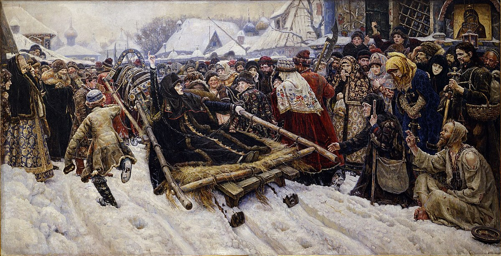
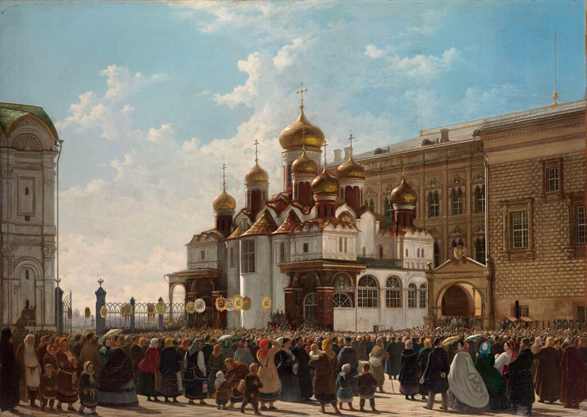

Faith

Faith is a constant theme throughout Anna Karenina, particularly regarding Levin’s pondering and search for meaning. As many scholars have noted, Levin is a semi-autobiographical stand-in for Tolstoy. Therefore, to understand Levin’s thoughts and critiques of faith, it is necessary to know how Tolstoy felt about and experienced faith throughout his life. While Tolstoy felt an instinctive religiosity from childhood, it was his conversion in the 1870s that induced his religious fervor. In the early 1870s, Tolstoy was corresponding with Strakhov, a literary critic and Russian philosopher, and these exchanges cemented his search for meaning (Medzhibovskaya 161). Then, upon reading Pascal and Hume’s essays on religion, Tolstoy wrote that he found it impossible to believe in prayer; instead, he saw himself as a searcher whom God was concealed from, writing in chapter 12 of A Confession: “He knows and He sees my search, my struggle, and my grief. He does exist, I told myself” (Tolstoy 44). However, Tolstoy still wanted to apprehend God and searched for other ways to communicate to provoke a response (Medzhibovskaya 171). Despite these struggles, Tolstoy briefly began an intense practice of the Orthodox religion from 1877 to 1878, and around the same time attempted to write his own catechism of faith, though it was left unfinished (Medzhibovskaya 174). However, this experimentation ended in a rupture because the church failed to live up to Tolstoy’s moral standards. Intersecting with this period was the writing of Anna Karenina, and therefore, the struggle with faith played a prominent role in it.
In Anna Karenina, Tolstoy criticizes many forms of religiosity through his depictions of various characters. First, there is Lydia Ivanovna and the court circles composed of enthusiastic women pursuing various alternative religions. For example, in Part 1, during a gathering at the Shcherbatsky’s place, the visitors discuss table-turning and spirits, leading Levin to point out that this practice demonstrates peasants and nobles possess the same intellect. Furthermore, Tolstoy depicts Lydia as hypocritical when she comforts Karenin and lauds his magnanimity, while selfishly directing Karenin to refuse Anna’s request to see her son. Through Lydia and other noblewomen, Tolstoy demonstrates his dislike of intellectual dishonesty and social superficiality. In Part 2, Tolstoy introduced the reader to Madame Stahl, whom Kitty meets while abroad. Madame Stahl introduces Kitty to a spiritual life, but Kitty is also bothered by certain traits, such as Madame Stahl's disdainful questioning about her family (Tolstoy 227). Later, the Prince informs Kitty that Madame Stahl actually stays in bed due to her bad figure and advises Kitty that it is better to refrain from a display of good deeds (235). Through Kitty’s perception of Madame Stahl over time, Tolstoy criticizes the promotion of self-abnegation. However, Tolstoy also demonstrates the positive aspects of faith through Kitty and Dolly. These characters are sincere nobles who practice orthodoxy to become more whole and fulfilled. Through their lives and relationship with faith, it is clear that Tolstoy finds some good in religion, if it is performed with the right intent. Most importantly, though, is Levin’s faith journey throughout the novel, which closely mirrors the turmoil Tolstoy felt during this period. While Levin reminisces about a childhood of innocent belief, in adulthood, he struggles with doubts. This is clearest in the weeks leading up to his wedding, when, in confession, he tells the priest that he doubts everything, even the existence of God (Tolstoy 442). As the reader journeys with Levin’s grappling with religion throughout the novel, they are rewarded with his revelation in Part 8. Here, Levin is struck by a simple statement from a peasant: to live for God and to do good continuously. The novel ends positively with Levin finishing his search for meaning in life, a journey that mirrors Tolstoy’s current one. As Tolstoy concluded Anna Karenina, he was also on the verge of a religious revelation that would lead to the formulation of his religious doctrine. By examining the relationships of multiple characters to religion and Levin’s own arc, readers can better understand Tolstoy’s stance on faith.
Works Cited
- Medzhibovskaya, Inessa. Tolstoy and the Religious Culture of His Time: A Biography of a Long Conversion, 1845–1885. Bloomsbury Publishing, 2009.
- Tolstoy, Leo. A Confession and Other Writings. Translated by Jane Kentish, Penguin Random House, 1988.